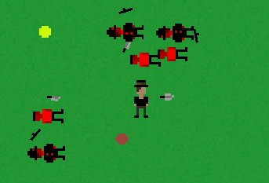

A Stroll Through London
GitHub: A Stroll Through London
Itch.io: A Stroll Through London
A Stroll Through London is a rogue-like game where the goal is to kill as many as possible. This game was made in a group of three across 72 hours as a part of the Neumont Summer Game Jam 2023, with the theme being 'you are the villain'. We won second place overall with best usage of theme and best gameplay. There are plans to continue development in the future to improve the game to a point where it can be fully released.
